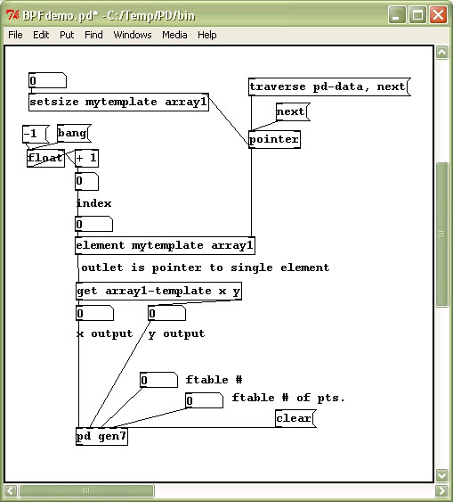

Introduction
This article describes a Pure Data patch which is a data structure holding an array of graphical break points. The array's data is traversed and fed into a subpatch which formats the numbers for a Csound Gen07 ftable. The table can then be sent to a Csound file using the csoundapi~ object for Pure Data and the "event" opcode from Csound. This patch follows the work of Matt Ingalls, and his "csound~events" patch example for Max/Msp. Victor Lazzarini also wrote csoundapi~, a class for Pure Data which is based on the Csound API, and provides similar functionality to csound~ for Max/Msp by Matt Ingalls. The current Max/Msp class is csound~ by Davis Pyon.
I. Background
The Max/Msp interface includes a graphical break point object which greatly
facilitates designing a patch employing break point functions. There are
several other Max/Msp objects or messages, such as "sprintf", and "prepend append"
which can help with printing and formatting array data. For Pure Data some of
this functionality can be obtained using additional libraries such as Flext,
and Cyclone, which are also included in the Pure Data extended version. The Pure
Data "table" object could also be employed in designing graphical interfaces,
such as for employing a Csound Gen01 input.
In this patch an attempt was made to remain true to Miller Puckette's version of Pure Data, and to employ data structures to build a graphical break point function suitable for Gen07 input which requires length of segments as 'n' storage locations in the even numbered pfields (see the Csound Manual for Gen07 description). Data structures are somewhat abstract and can be difficult to debug since help examples may not be applicable to the patch you are attempting to design, but the possibility of employing graphic objects with filled polygons, colors, and line thicknesses etc. in a graph is enticing enough to seek solutions for employing data structures.
II. Description of the Patch
In the patch, three data structures are declared as "pd data", "pd mytemplate",
and "pd array1-template". The data structure "pd data" holds the graph which
is also where manual editing of data points is allowed. To view the graph, in
the demo patch, double click the data structure.

The second data structure "pd mytemplate" holds a struct object with floating point values x and y, and an array which is itself a struct in the third data structure "pd array1-template". The second data structure includes the "plot" object which plots x and y values for the graph as a whole, while the third data structure includes the individual polygon objects of the graph.
One difficulty in reverse engineering example data structures patches is simply copying, pasting and renaming objects often looses the data which is unrecoverable unless you generally have some way to initialize the data structures. In the demo patch two methods are employed for initialization. One method loads a file from disk, and also allows you to save a break point function graph to disk as a text file which includes data structure information. The second method clears the data structure and appends a new initial point to the graph.
In addition to initialization, important to the operation of data structures is the ability to traverse the data structure using a "pointer" object in order to act on the data using objects such as "setsize" and "get". Thus after making any changes on the break point function graph, such as moving the location of a point, or adding points, you must traverse the data structure using a pointer.
When adding additional break points to the graphical data structure using the setsize object, a difficulty arises in where the new polygons are placed due to the fact that the third data structure includes x and y coordinates. Viewing the values of the data structure by selecting a point and viewing properties can provide some additional text information on the data points and their current x and y locations. This is also important for making sure the data points are in successive order, for Gen7 ftable input, and is the information which is saved to disk when selecting the "readit" object, from above.
The values obtained from the graph are more suitable for drawing figures and shapes, and interpreting those musically in someway, rather than functioning as a true break point function editor. This is where the Max/Msp object excels with its point and click method of adding data points, and also where a Pure Data "table" object could be an easier approach to other types of Gen routine input where one can set the type of line or points, and range to be used within the table.
Important for Gen07 input is the Pure Data "element" object used along the "get" object. When combined with a "pointer" object to traverse the data structure which includes the graph of polygon points, the use of "element" and "get" will provide an index to the points which can be used to extract the length of the segment between the data points.

The gen7 subpatch does the work of formatting the numbers from the data structure into a Pure Data message, which when used with the "event" opcode, and the proper formatting for Gen07 can be used to send data to a Csound instrument via the csoundapi~ object. Some differences here from the Max/Msp patch by Matt Ingalls are the use of "sprintf" and also the use of "prepend append".
The ftable number inlet takes the number of the table, passes it thru as a float variable and packs it with the number of points before setting it as a message to be appended the list. The list is trimmed and "set" is removed before being sent to the outlet, which returns the list to a regular message.
The number of points inlet is the number of samples in the ftable. The path is the same as above for the ftable inlet except that when only the table number of points is altered, it also bangs to trigger the table number as well.
The clear inlet triggers a message which sends '0' as input to the receiver objects. The clear message triggers a "bang" to the "list prepend" object to prepend zeros to the list, then the clear message is sent again to force the zeros thru the list.
For the x and y inlets, the input values are the traversed data points from the "pd data" window. The last value of x is subtracted from the previous value for a Gen07 length of segment input. The values x and y are packed and prepended to a list, and as the x y pairs continue to grow, the list is appended. The list is then split to remove initial zeros and the remainder is appended to the basic four pfields of the set message for the ftable number and number of points, before set is trimmed off the list and the whole thing is sent to the subpatch outlet as a message.
The formatted score f-statement with the opcode event at the beginning of the message generates a score event from the Pure Data patch. The ftable message is formatted for a Gen07 routine, and generates waveform functions from segments as straight lines. The message is sent as an inlet to the csoundapi~ library object which also lists the .csd file, to which the event message is sent, as an argument.
Another message is also sent to the csoundapi~ library object to generates score event notes or i-statements. Playing the short melodic fragment generated by this message after firing a new Gen07 table message should allow the user to hear differences in waveform shapes generated by altering the polygons as break point functions on the graph.
The Csound BPFdemo.csd file employed in the background, to receive the events from the csoundapi~ object is simple and straightforward. Basically it runs by means of an f0 statement in the score for a certain amount of seconds, allowing the "event" opcode time to generate a score event as ftable (Gen07), and i- or note events which are sent as messages from the Pure Data patch.
<CsoundSynthesizer> <CsOptions> </CsOptions> <CsInstruments> sr= 44100 kr = 4410 ksmps = 10 nchnls= 2 instr 1 asig oscili 3000, cpspch(p4), 1 outs asig, asig endin </CsInstruments> <CsScore> f0 6000 f1 0 512 10 1; sine wave </CsScore> </CsoundSynthesizer>
For more details and information you can download the full patch here: PdBPFdemo.zip
Conclusion
The csoundapi~ object for Pure Data, as well as the Csound software bus opcodes and event generating opcodes have opened access to Csound as synthesis engine for the Pure Data interface. While building patches to take advantage of those capabilities are useful and informative, we depend upon the nature of development in the host program to retain compatibility through various upgrades and changes. The idea of a Pure Data break point function object, similar to the one in Max/Msp , is an idea worth pursuing.References
Ingalls, Matt. "csound~events", an example patch from Matt's Csound Max/Msp object package. http://www.csounds.com/matt/ (07 October 2006).Lazzarini, Victor. csoundapi~, from Csound version 5.03, http://www.csounds.com/ (released 15 August 2006).
Puckett, Miller. Pure Data. http://crca.ucsd.edu/~msp/software.html (07 October 2006).
Resources
Pure Data extended (see "downloads" on the Pd Wiki for the sourceforge link): http://puredata.info/downloads/Davis Pyon's current csound~ object for Max/Msp is available at: http://www.csounds.com/
Max/Msp is a licensed, commercial software product and is available for purchase from: http://www.cycling74.com/